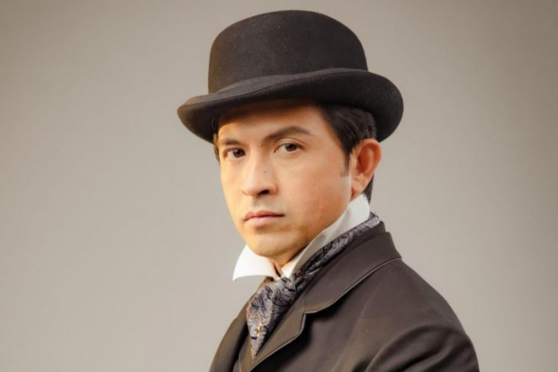
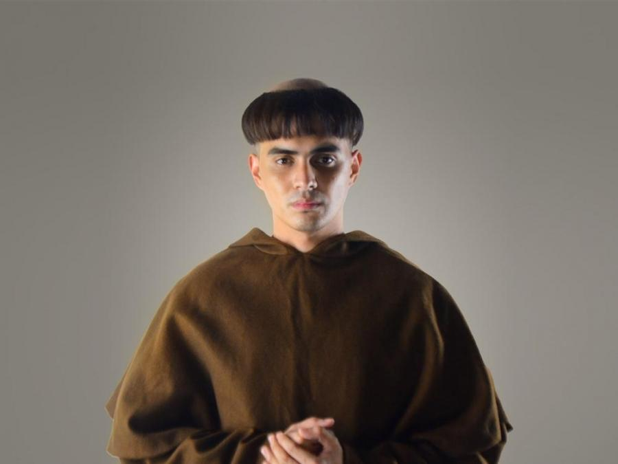
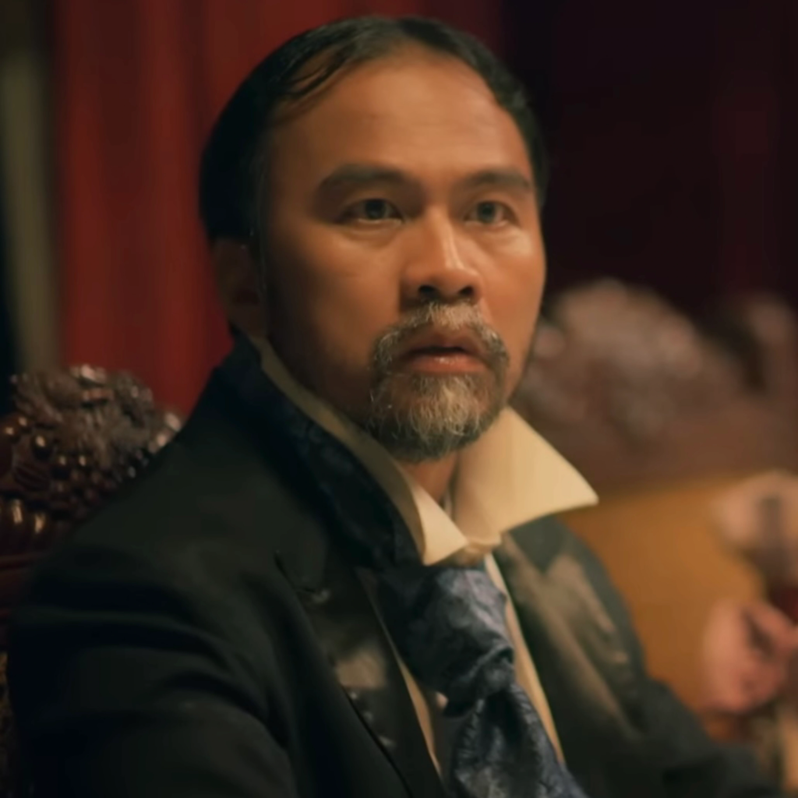

| CHARACTERS IN NOLI ME TANGERE |
|
|
Maria Clara de los Santos y Alba |
- She is a woman of high social standing.
- She is the daughter of Capitan Tiago and Donya Pia.
- She is biologically the daughter of Padre Damaso as a product of a relationship between Donya Pia and Padre Damaso.
|
|

|
Juan Crisostomo Ibarra y Magsalin |
- He is a wealthy and smart young man who studied in Europe for seven years and returned to the Philippines.
- He is the son of Don Rafael.
- He wishes to open a school in San Diego to fulfill his father's dreams.
|
|
|
Padre Damaso |
- He is an old, greedy, and corrupt Spanish priest.
- He was the mastermind behind the death of Don Rafael.
- He is the godfather of Maria Clara.
|
|
|
Elias |
- He is a mysterious character who resents the Spanish colonial government and Catholic church.
- He is a good friend of Crisostomo Ibarra.
- He has witnessed the abusive behavior of the Spanish people on Filipinos, which gave him a strong sense of justice.
|
|

|
Padre Salvi |
- He is a frail Spanish priest in San Diego.
- He was assigned to be the replacement of Padre Damaso.
- He is looking forward to Ibarra's downfall while always keeping an eye for Maria Clara.
- He is in a feud with the Alperes.
|
|
|
Kapitan Tiago |
- He is a very wealthy and religious Filipino.
- He is the father of Maria Clara.
- He was a good fried of both Don Rafael and Padre Damaso.
- His aim is to let Maria Clara marry a man in an influential family.
|
|
|
Don Rafael Ibarra |
- He is a wealthy man.
- He is a critic of the corrupt Spanish priests, which labeled him as heretic.
- He was accused of being the cause in an accidental death.
- His remains were ordered to be moved to the Chinese cemetery as a disrespect.
|
|
|
Don Anastasio |
- He studied philosophy.
- He was labeled as a crazy man due to his intelligence, by the uneducated people.
- When he stopped studying, he started getting into cockfights.
- He soon got back to studying by learning only from books.
- He became a widower just a while after getting married.
|
|
|
Sisa |
- She is the mother of Crispin and Basilio.
- She is the wife of her unemployed abusive husband, Pedro.
- She is a very caring mother.
- She was in a wealthy family, but got blinded by love.
|
|
|
Crispin |
- He is the son of Sisa and Pedro, and is the younger brother of Basilio.
- He worked along with his brother for money.
- He was accused of stealing Php30 and became a prisoner until the price was paid.
- He experienced abuse from the Sakristan Mayor which led to his death.
|
|
|
Basilio |
- He is the son of Sisa and Pedro, and is the older brother of Crispin.
- He worked along with his brother for money.
- He tried to search for his younger brother, however his attempts were useless.
|
|
|
Donya Victorina de Espadaña |
- She is the wife of Don Tiburcio.
- She is a Filipina social climber.
- She always carries make-up with her to look younger.
- She tries to get higher status by trying to marry off her nephew to Maria Clara.
|
|

|
Don Tiburcio de Espadaña |
- He is the husband of Donya Victorina.
- He charges people for medical service despite having no true medical experience.
- Don Victorina encouraged Don Tiburcio to continue pretending to be a medical professional.
- After his patients found out about his scheme, he went to San Diego to continue pretending to be a medical professional.
|
|
|
Donya Consolacion |
- She is the wife of the Alperes.
- She is a Filipina who refuses to speak in Tagalog because she is ashamed of her heritage.
- She fights with her husband often.
|
|
|
Alperes |
- He is the head of the Civil Guard of San Diego.
- His wife is Donya Consolacion.
- He is very tough on his workers.
- He is in a feud with Padre Salvi for power.
|
|
|
Tiya Isabel |
- She is the cousin of Kapitan Tiago.
- She took care of Maria Clara after Donya Pia, Kapitan Tiago's wife and Maria Clara's mother, passed away.
- In the de los Santos' home, she is the head housekeeper.
|